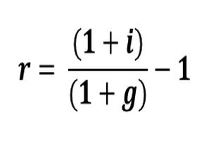

Lo Básico: ¿cómo medimos el rendimiento?
YTD - year to date: se refiere al rendimiento del activo en el año en curso,
desde el 1 de enero hasta el día de hoy.
YTY - year to year: se refiere al rendimiento del activo contando desde un año atrás hasta hoy. Por ejemplo, si hoy
es 25 de octubre de 2021, se mide el rendimiento desde el 25 de octubre de 2020.
Cotizaciones del dólar en Argentina
Dólar MEP: es el implícito que surge de la cotización de un mismo bono en dólares y en pesos.
Ej: si un bono cotiza 6500$ en moneda local
y su precio es de 37 dólares, entonces del dólar MEP será de 175.67 (=6500/37).
Se toma el bono AL30 por ser el más líquido en el mercado local,
a pesar de ser actualmente una plaza altamente intervenida por el Estado.
Dólar CCL: está implícito en la cotización de una acción en el mercado argentino en pesos y
su cotización en el mercado norteamericano en dólares.
Rendimiento real vs nominal
Concepto fundamental: nos interesa lo que el dinero puede comprar! Así, el rendimiento nominal de una inversión
se ve mermado por la inflación y los impuestos.
Por ejemplo, si el rendimiento nominal anual de mi inversión fue de 10%
y la inflación en el mismo periodo fue de 15%,
resulta que el rendimiento real fue negativo porque el dinero que tengo hoy compra menos bienes y servicios
que el dinero inicialmente invertido.
Fórmulas financieras

Esta fórmula nos permite pasar de un rendimiento nominal a uno real.
Derivada de la ecuación del economista Irving Fisher, sus términos son:
r: rendimiento o interés real
i: rendimiento o interés nominal
g: inflación en el período